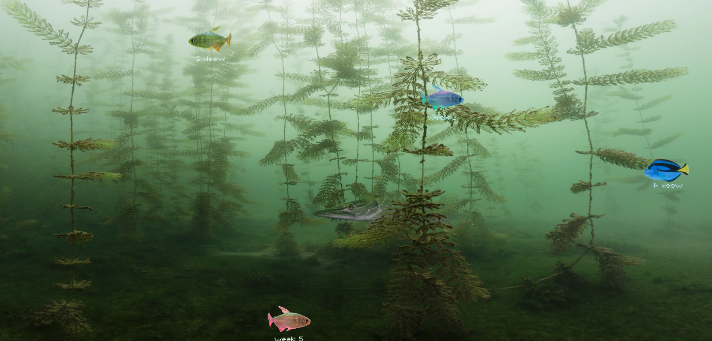
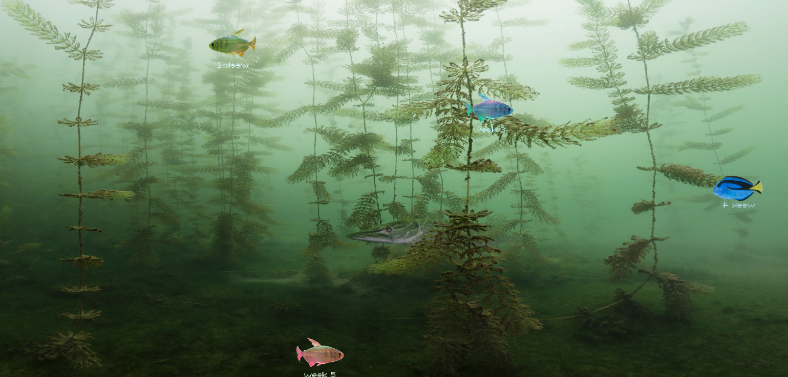

Week 12
Tuesday, 15th October
Class Activities:
This week, we didn’t have any practical coding sessions with our tutor as we’re all focused on refining the code for our Project 2 submission and SKO webpage, both of which are due very soon. And also because the tutors couldn’t make it to class, we spent the time working independently on our projects, troubleshooting and improving our code on our own.
Progress on Major Project 2:
For Project 2, I’ve continued to refine the coding for my interactive text and multiple canvases. I’m ensuring that the spotlight effect is working smoothly and experimenting with font manipulation to enhance the visual experience. As I get closer to submission, I’m making sure that the interactivity aligns with my original concept of revealing the imperfections in the text through the hover effects.
Progress on SKO:
I’ve been making more progress on my SKO webpages. The HTML structure is coming together, and I’m refining the design to make sure everything looks polished. The self-directed time allowed me to really focus on making sure all the links, content, and layout flow well across the different pages. There’s still more work to be done, but I’m getting closer to a final product.

 
